Making private AI obvious.
hussh asks people to trust a new kind of product: an AI assistant that runs on their own device. The current homepage sells the philosophy before the product. This case study follows the redesign from audit to a live, responsive, accessible page.
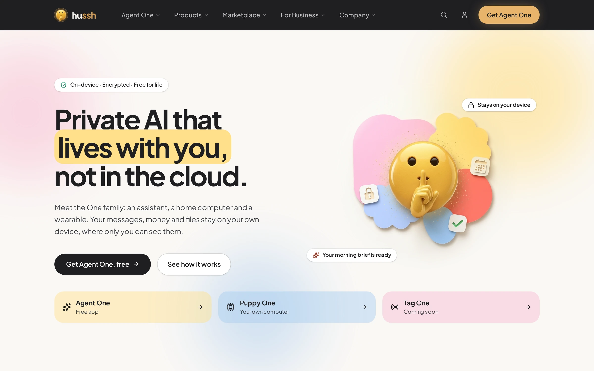
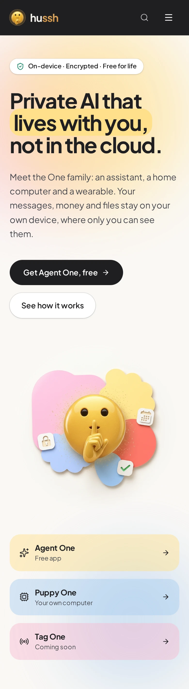
Abstract promise, unclear product
"Personal supercomputing, owned by you" doesn't say what Agent One does, how the three products relate, or where to start. The page ends without asking.
Audit, diverge, converge, build
20 audit findings became three priorities. I explored widely with AI's help, scored every direction, and combined the strongest parts.
Say what it is, then prove it
A benefit-led hero, Agent One as the lead product, privacy shown through a comparison and a marketplace demo, one consistent call to action, 0 contrast failures.
Personal AI built around ownership
hussh's pitch is that your assistant should run on hardware you own, so your messages, money and files never sit on someone else's server. Three products carry it.
Agent One
The private assistant: reads only what you connect and turns it into a morning brief, caught charges and drafted replies. Free and available today, so it's where every visitor should start.
Puppy One
A laptop or Apple Silicon Mac with Agent One preinstalled, for people who want it running all the time.
Tag One
A consent-first wearable for a trusted circle. Not shipping yet, so the right action is a waitlist.
Curious, privacy-aware, not technical
Uses ChatGPT or Siri, feels uneasy about where data goes, wants a reason to switch in seconds.
Agent One sign-ups
The free app is the funnel; hardware and the marketplace grow from it.
Evolve, don't rebrand
Keep the mascot, the gold and the product names. Fix clarity and consistency.
A promising story held back by its presentation
I reviewed the current homepage section by section against Nielsen's heuristics and basic conversion principles. 20 findings, pinned where they happen. Hover a finding to find its pin.
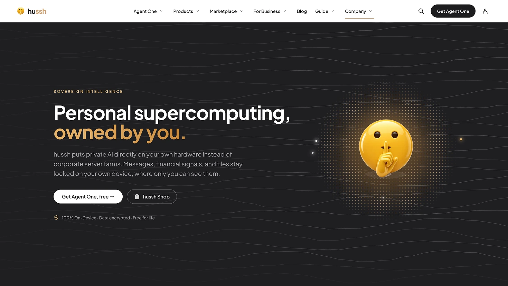
Navigation & hero
- 1
Seven menus before one product Med
Seven top-level items, five dropdowns, plus search, account and a CTA. Visitors meet the org chart first.
- 2
The headline doesn't say what it is High
"Sovereign intelligence" and "Personal supercomputing" describe a belief. Nothing above the fold says it's an assistant for your mail, calendar and bills.
- 3
The secondary CTA jumps ahead Med
"hussh Shop" asks visitors to buy hardware before they know what it's for.
- 4
Proof is the smallest text on screen Med
On-device, encrypted and free sit in a 13px line, followed by about 200px of empty canvas.
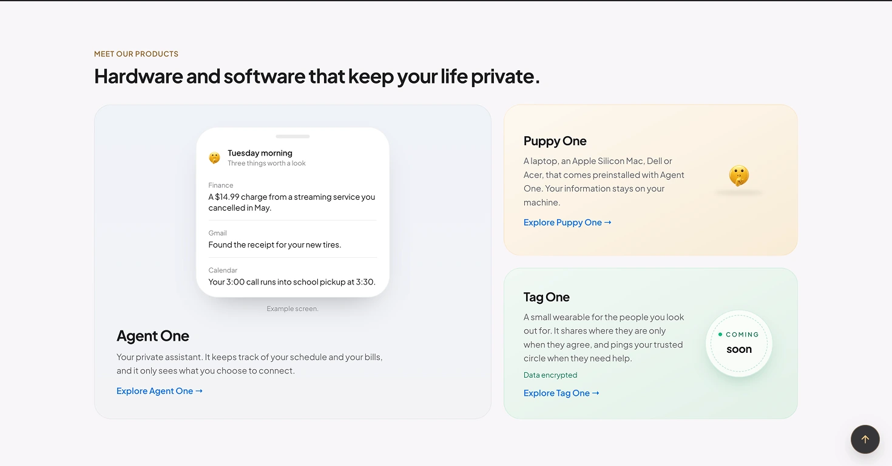
Product cards
- 5
Three products, three levels of care High
A detailed phone mock for Agent One, a 48px emoji for Puppy One, a stamp for Tag One. Hardware looks unfinished.
- 6
What is Puppy One? High
"A laptop, an Apple Silicon Mac, Dell or Acer, that comes preinstalled…" reads like a list of laptop brands.
- 7
Off-palette links Low
The only blue on the page, and arrows vary between →, › and ↗.
- 8
"Data encrypted" on one card only Low
Implies the other two products aren't encrypted.
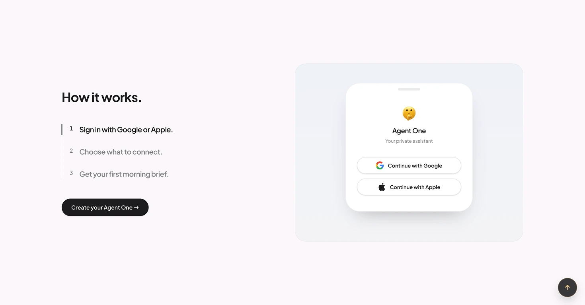
How it works
- 9
Steps 2 and 3 look disabled Med
Only step 1 is styled active, so the others read as unavailable.
- 10
Shows the login, not the payoff Med
The only visual is "Continue with Google / Apple." The morning brief never appears.
- 11
Generic heading, dead space Low
"How it works." promises nothing about time, effort or result.
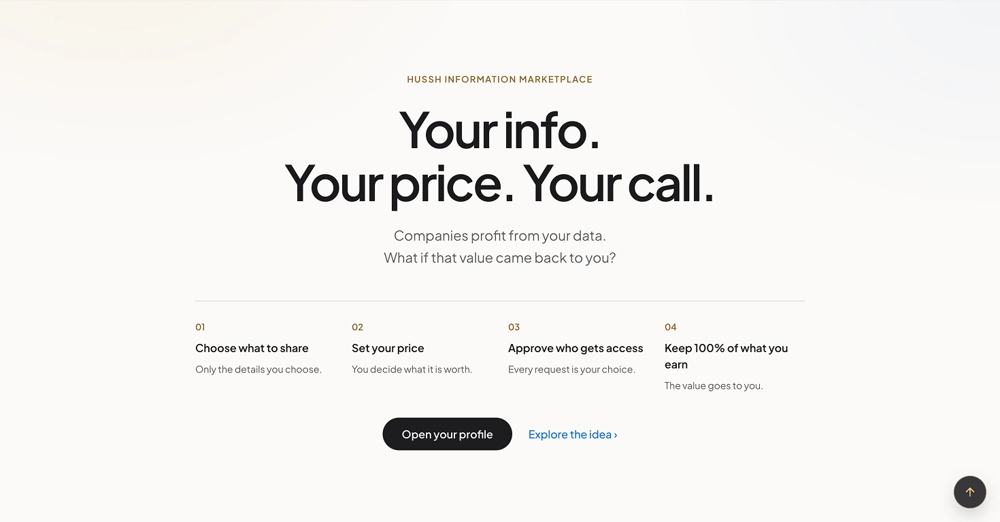
Information marketplace
- 12
Layout grammar switches Low
Everything above is left-aligned; this section is centered and oversized.
- 13
"Open your profile": which profile? Med
A third CTA label and a new link style. Visitors don't have a profile yet.
- 14
A new idea told in four short claims High
Selling your own data on your terms is new. No example shows what a request looks like or what you'd earn.
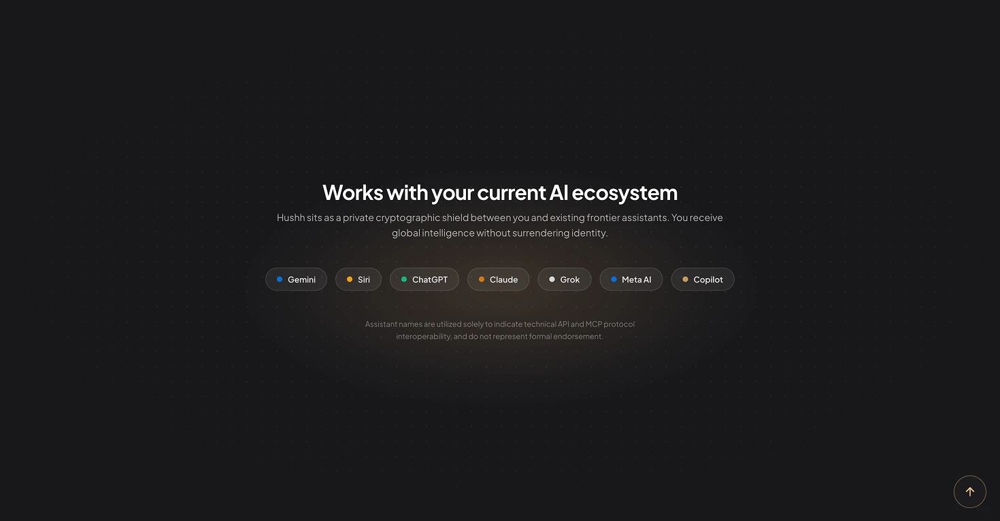
AI ecosystem band
- 15
770px for one sentence Med
A heading, a sentence and seven chips in a mostly empty band.
- 16
Jargon and three spellings Med
"Private cryptographic shield… global intelligence". The brand appears as hussh, Hussh and Hushh.
- 17
The page never closes High
No final call to action. The last thing a convinced visitor sees is a trademark disclaimer.
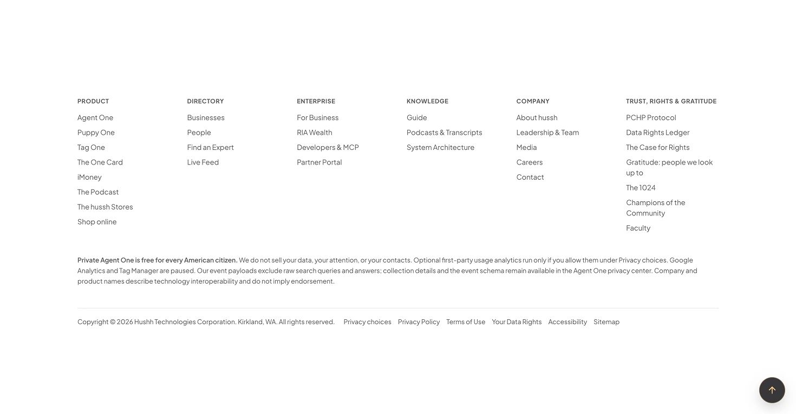
Footer
- 18
No logo, 37 links, a white gap Low
Six columns with no brand mark.
- 19
The best promise is in fine print Med
"Free for every American citizen" sits in a gray legal paragraph.
- 20
Unclear link labels Low
"iMoney", "The 1024" and "Gratitude" don't say where they lead.
Four patterns behind the findings
The offer is abstract
Beliefs instead of what Agent One does on a normal Tuesday.
Weight doesn't match importance
Space goes to slogans; proof and hardware get the least care.
No shared system
Different CTA labels, link colors, arrows and alignments.
The path to "start" is broken
Competing exits up top and no ask at the end.
From complex messaging to a clear first visit
How might we help first-time visitors understand what private AI does for them, trust how hussh handles their data, and see one clear way to start?
Say what it is, then prove it
Lead with the benefit in plain words. Back every privacy claim with something visible.
Make Agent One the hero product
One product leads; the hardware supports. Equal care for all three.
One system, one path
One CTA per intent, one link style, one alignment logic. End with an ask.
Every section gets one job
- PromiseHeroAbstract headline, two CTAs
- ProductsMeet our productsUneven cards
- EffortHow it worksSign-in only
- UpsideMarketplaceClaims, no example
- EcosystemWorks with AIThen the footer. No ask.
- PromiseHero + product doorsBenefit headline, proof chip, one primary CTA
- ProductsHardware and softwareAgent One leads
- EffortFour steps to your first briefEnds on the payoff
- Proofhussh vs. typical cloud AINew
- UpsideMarketplaceNow a working demo
- EcosystemFour ringsExplains how it stays private
- AskBring your life back homeNew closing CTA
AI made options cheap. I decided which ones mattered.
I used AI tools to move faster at every stage: drafting, generating variations and building coded prototypes. The judgment calls stayed mine. Each phase shows what I did, what AI did, and where I chose differently from what the tool produced.
- 1
Understand & audit
→ 20 findings, 4 patternsMe- Walked the live page section by section
- Applied heuristics, rated severity, grouped patterns
AI- Suggested a starting checklist and a case-study outline
- Sampled text contrast from screenshots
DecisionThe AI outline listed "low text contrast" as a major issue. I measured it: only one caption failed. I reframed the problem as hierarchy, not contrast.
- 2
Frame
→ brief, priorities, scoring criteriaMe- Problem statement and the Agent One-first strategy
- Three priorities and the criteria to judge directions
AI- Generated alternative "How might we" phrasings to pressure-test mine
- 3
Diverge on structure
→ baseline + 4 wireframesMe- Defined four structural bets and the sections each had to include
- Redrew the current page as a baseline
AI- Turned each brief into a grayscale wireframe fast enough to compare all four in one sitting
- 4
Diverge on look
→ 5 coded visual directionsMe- Art direction: mascot, gold, 3D product scenes, light versus dark
- Reviewed each direction against the brief
AI- Built each direction as a coded prototype with a version switcher, so I could flip between them on one page
- 5
Decide & converge
→ one conceptMe- Weighted scoring; chose which part of each direction to keep
- Rewrote headline and CTAs
AI- Assembled the combined concept from my list of parts
DecisionThe generated copy described Puppy One as "a small computer for home." That's not what hussh sells. I restored the accurate description: a laptop or Apple Silicon Mac with Agent One preinstalled.
- 6
Build & refine
→ live site, desktop + mobile, design kitMe- Design tokens, type scale, 44px targets, focus and label requirements
- Reviewed every section at 1440 and 390 wide
AI- Built the responsive page from the concept and tokens with an AI app builder
DecisionThe concept's AI section was a bare row of chips. I brought back the four-rings diagram from the Manifesto direction, because it explains how hussh stays private instead of just listing logos.
- 7
Verify & present
→ this case studyMe- Decided what to claim and labeled hypotheses as hypotheses
AI- Ran accessibility checks on the live page; helped assemble this site
AI never picks the direction
It generates options and builds them. Scoring and the final choice are mine.
Product facts come from hussh
Generated copy gets checked against the real product before it ships.
Measure before claiming
Every number on this page was measured; everything else is labeled a hypothesis.
Four bets on what convinces a visitor
Each direction answers one question differently: what does a skeptical visitor need to see first? I wireframed each in grayscale, then took it to full fidelity.
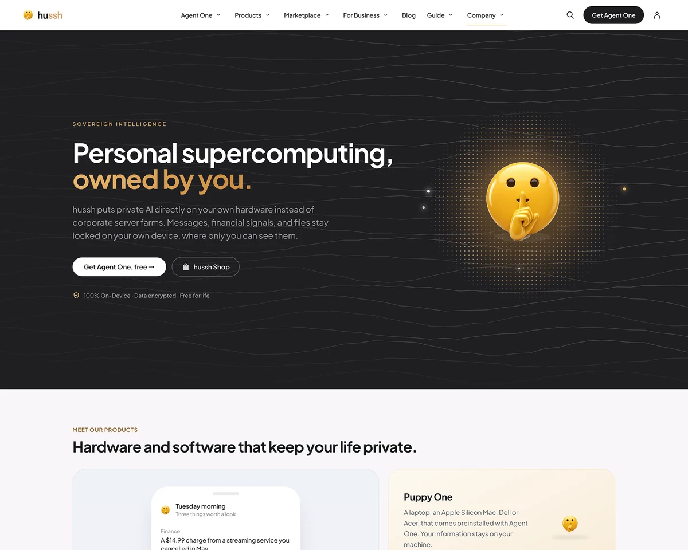
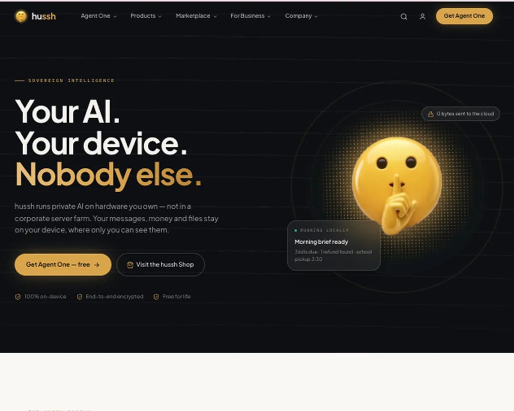
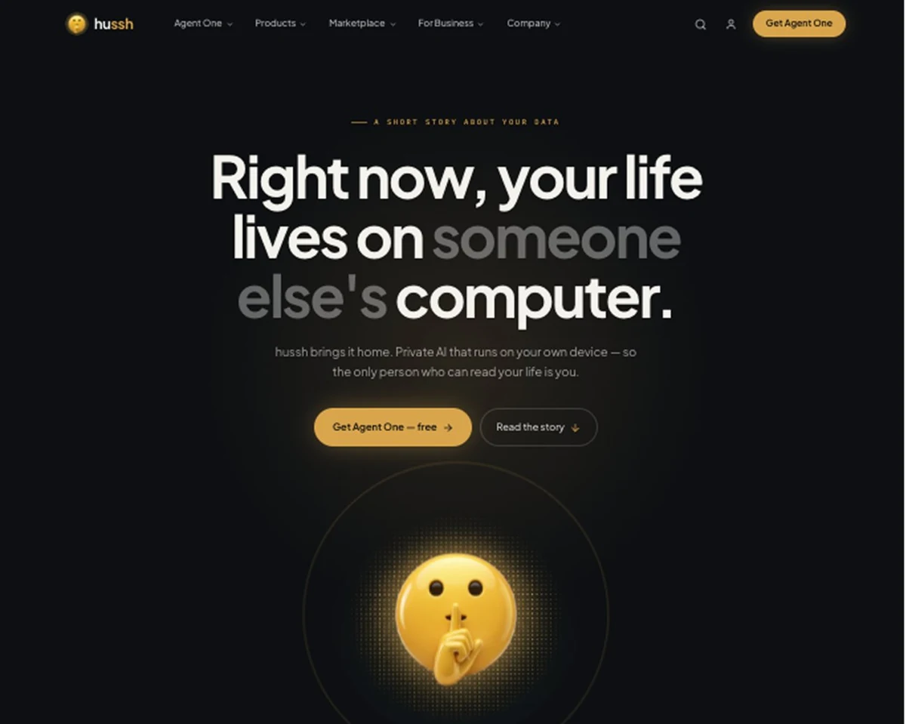
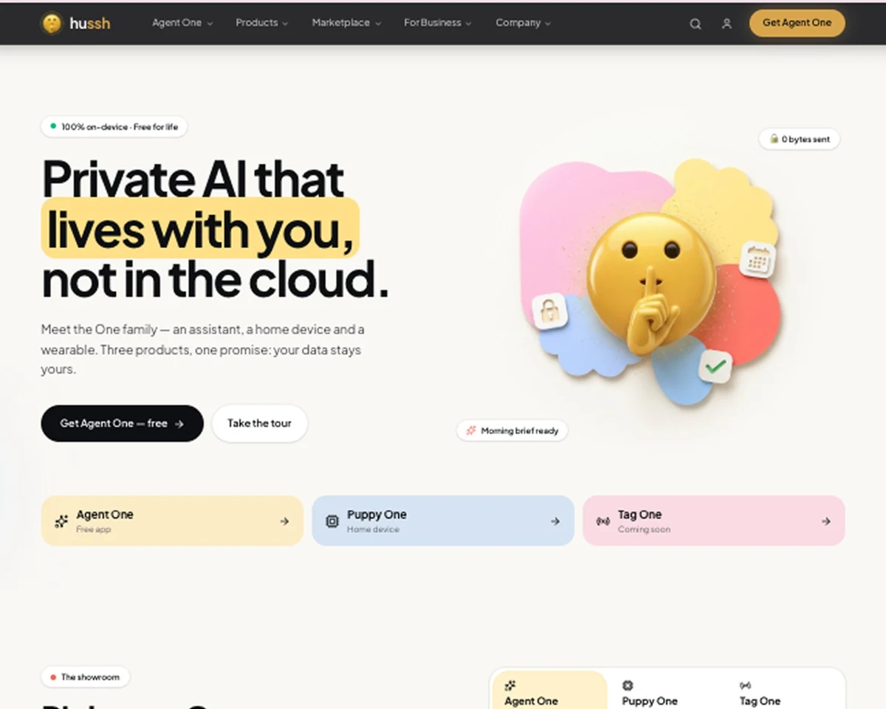
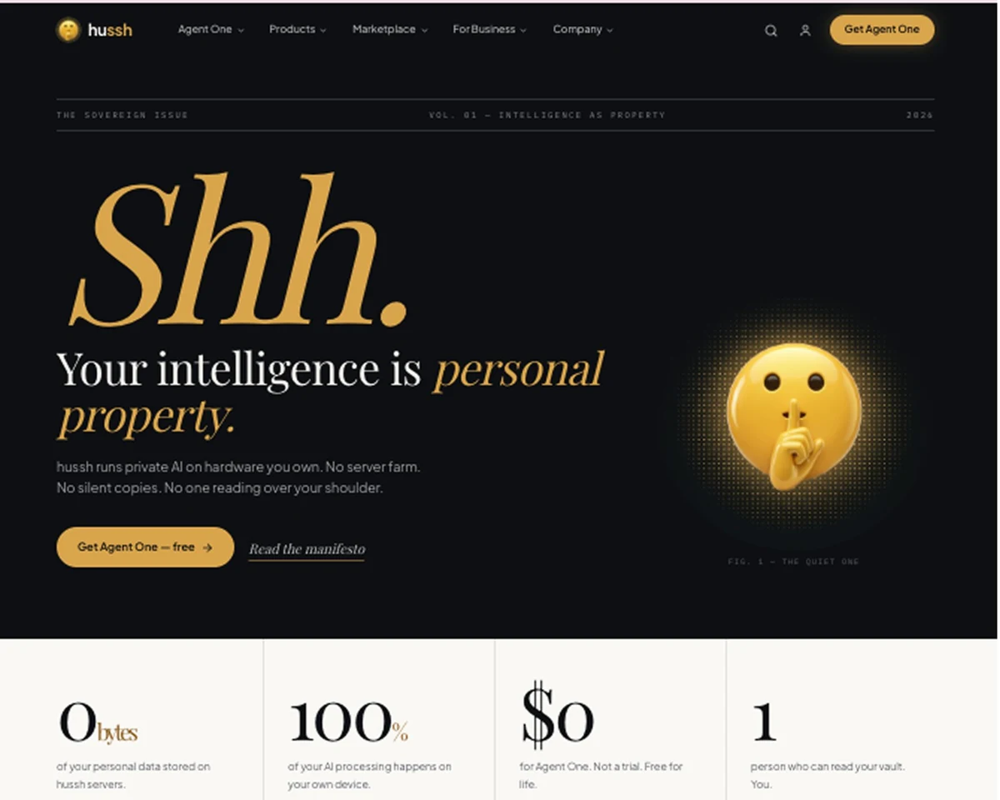
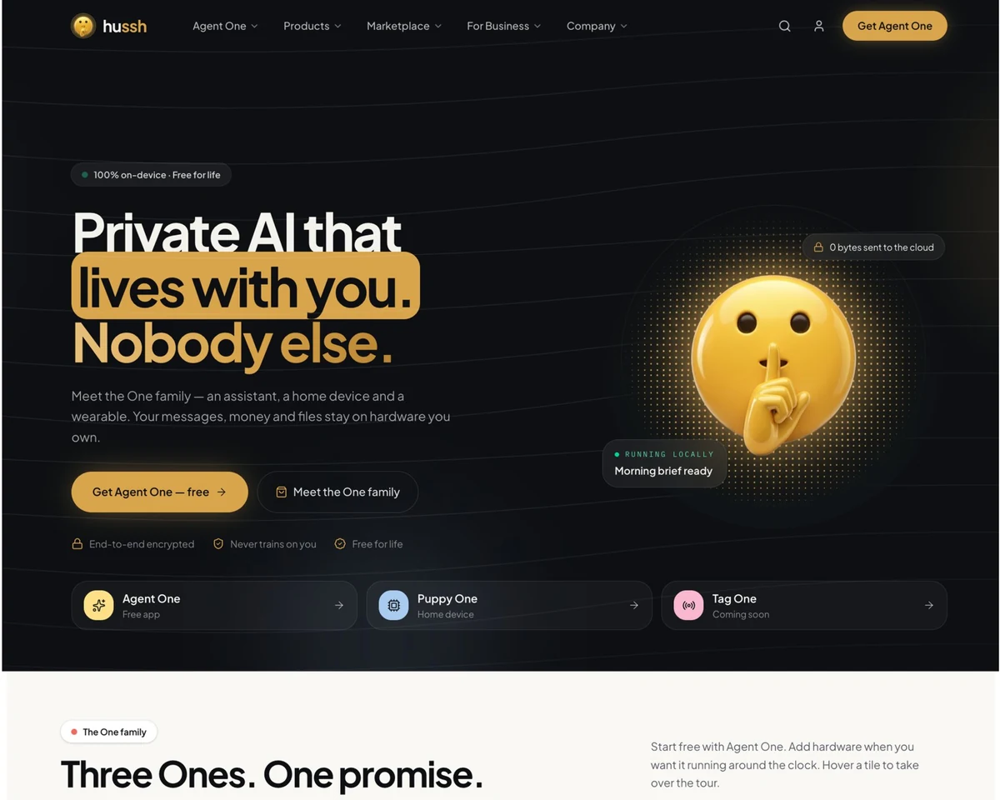
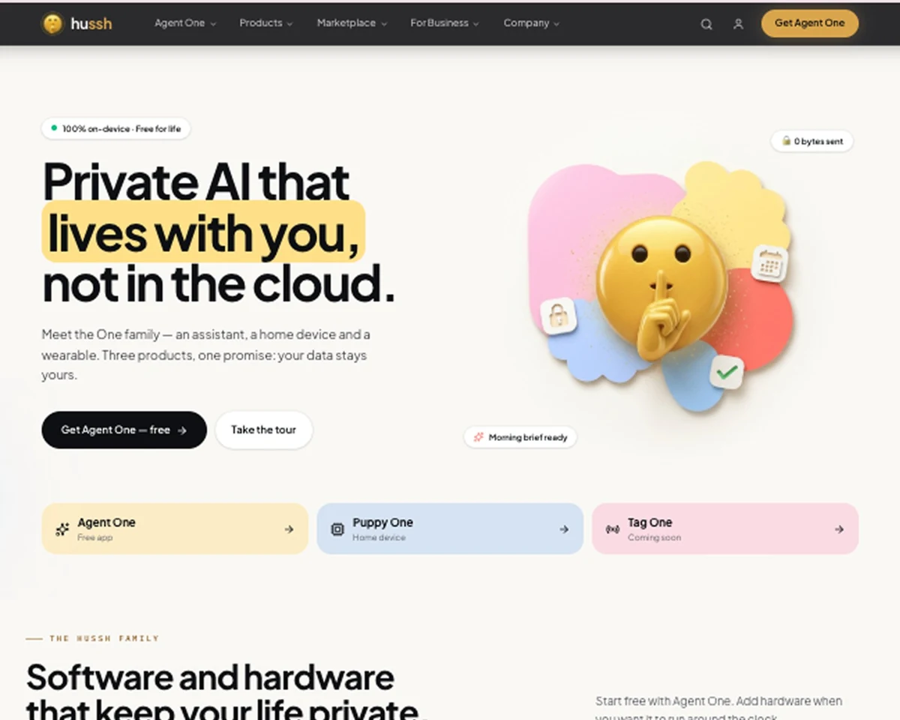
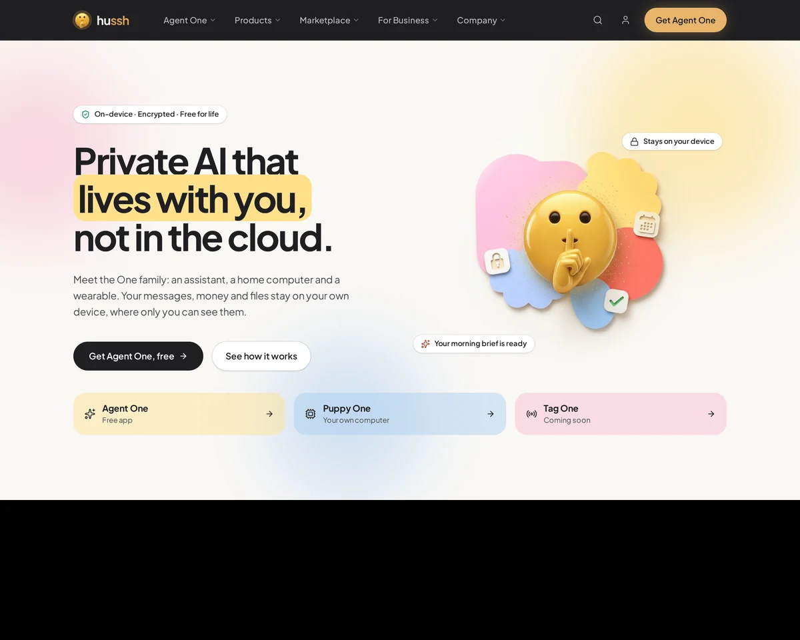
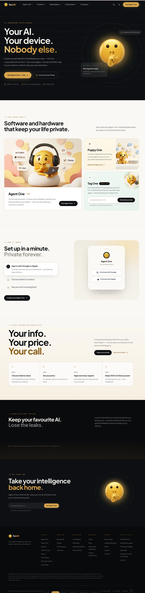
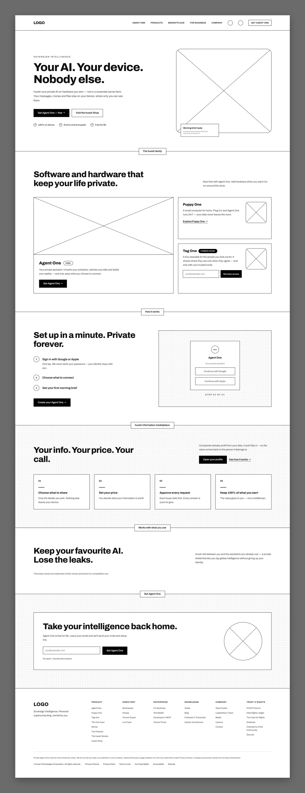
"Your AI. Your device. Nobody else."
Strengths
- Lowest risk; every section maps to one today
- Bento makes Agent One twice the size of the hardware
Tradeoffs
- No proof section; privacy is asserted
- The AI band stayed nearly empty
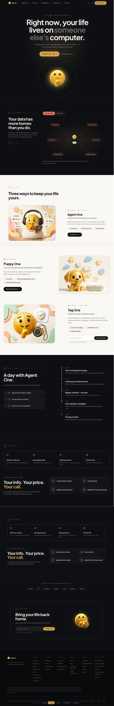
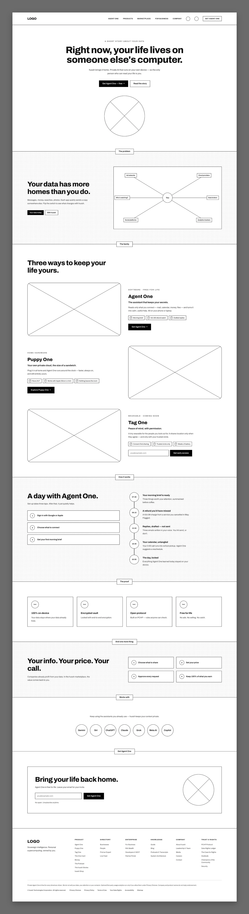
"Right now, your life lives on someone else's computer."
Strengths
- Strongest emotional case
- "A day with Agent One" timeline is the most concrete product description
Tradeoffs
- 11 sections; first product appears two screens down
- The hero shows no product
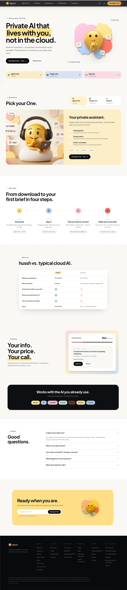
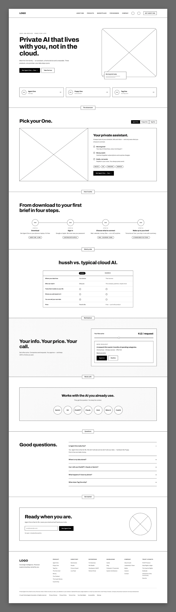
"Private AI that lives with you, not in the cloud."
Strengths
- Clearest headline: category plus difference
- Comparison table and marketplace demo make privacy concrete
Tradeoffs
- Tabs in "Pick your One" hide two of three products
- The yellow closing card loses hussh's dark gravity
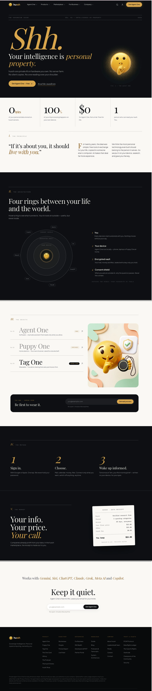
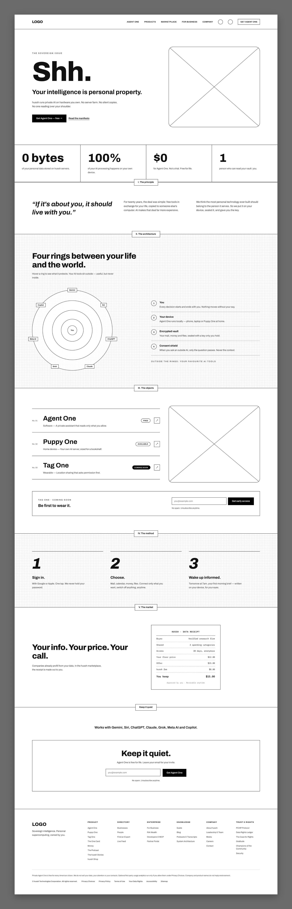
"Shh. Your intelligence is personal property."
Strengths
- Most distinctive; stats strip makes proof scannable
- The four-rings diagram explains the architecture
Tradeoffs
- "Shh." says nothing about the product
- A serif display is a rebrand, outside the brief
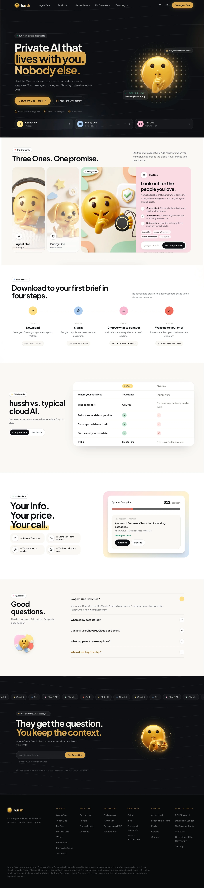
"Private AI that lives with you. Nobody else."
Strengths
- Proved Tour's structure survives a darker brand
- Trust row under the CTAs
Tradeoffs
- Expanding gallery needs hover, which touch screens lack
- Pastel renders on near-black look pasted on
Scored against the brief, then combined
Each direction scored 1–5 on six criteria. These are my design judgments, not test results. Clarity weighs most because it's the current page's biggest failure. Change the weights to see how robust the choice is.
| Direction | Clarity×3 | Agent One focus×2 | Trust×2 | Brand×1 | Path to start×2 | Build cost×1 | Weighted |
|---|
Tour's spine, with each weak spot fixed by another direction
The spine
Headline and highlighter, product doors, four steps, comparison, marketplace demo.
The product bento
All three products visible at once, Agent One at twice the size.
The close
"Bring your life back home." in a dark band.
The four rings
Explains how the privacy works, not just that it exists.
Proof chips
"On-device · Encrypted · Free for life" above the headline.
On purpose
The data-web diagram, the expanding gallery and the FAQ.
Words did half the redesign
The audit's biggest problems were copy problems. I tested headlines, collapsed nine CTA labels into three intents, and set five voice rules.
| Headline | Names it | Different | Plain | Notes |
|---|---|---|---|---|
| Personal supercomputing, owned by you. | ✕ | ~ | ✕ | Current. Sounds like hardware specs. |
| Your AI. Your device. Nobody else. | ~ | ✓ | ✓ | Strong rhythm; vague about what it does. |
| Right now, your life lives on someone else's computer. | ✕ | ✓ | ✓ | Names the problem, not the product. |
| Shh. Your intelligence is personal property. | ✕ | ~ | ✕ | Memorable for fans, opaque for newcomers. |
| Private AI that lives with you, not in the cloud. | ✓ | ✓ | ✓ | Chosen. Category, benefit and contrast in ten words. The highlighter sits on the benefit. |
Proof over posture
Sovereign intelligence
On-device · Encrypted · Free for life
Describe the thing
A laptop, an Apple Silicon Mac, Dell or Acer, that comes preinstalled with Agent One.
A laptop or Apple Silicon Mac with Agent One preinstalled. Your information stays on your machine.
Plain words over jargon
A private cryptographic shield between you and existing frontier assistants.
hussh sits between you and it as a private shield, so it gets your question, never your identity.
Say exactly what happens
No spam. Unsubscribe anytime.
We only use your email to send your invite. Unsubscribe anytime.
Numbers over adjectives
Fast, easy setup
About two minutes, start to finish.
Swipe through the page, section by section
Each pair shows the same vertical space at the same width: the redesign on the left, the current hussh homepage on the right. Drag the handle, or focus it and use the arrow keys.
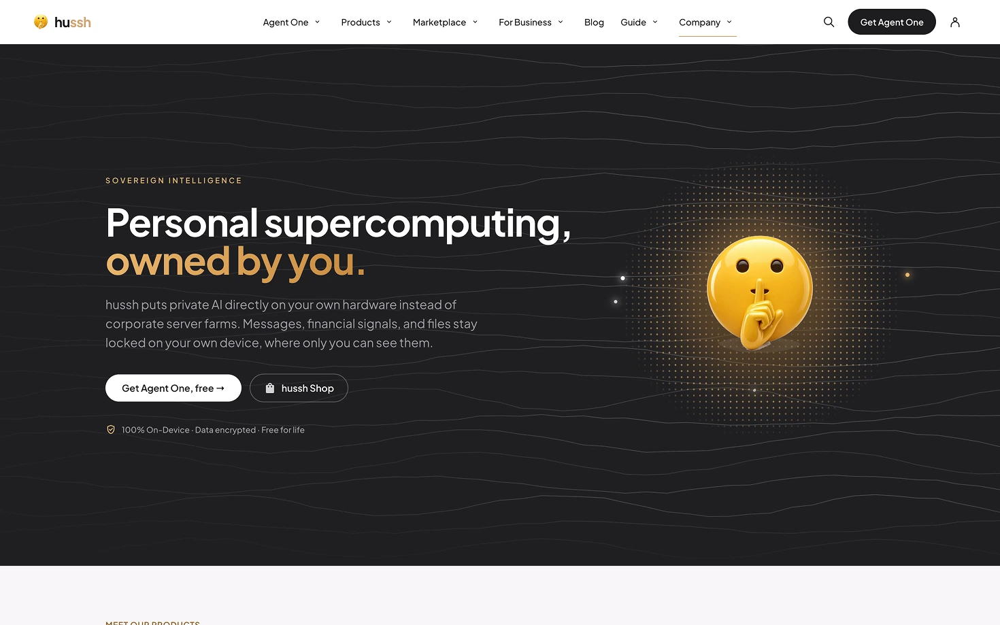
AfterBeforeBelief-led headline, shop as the second action, proof in 13px.
Names the product category, highlights the benefit, puts proof above the headline and adds three color-coded product doors.
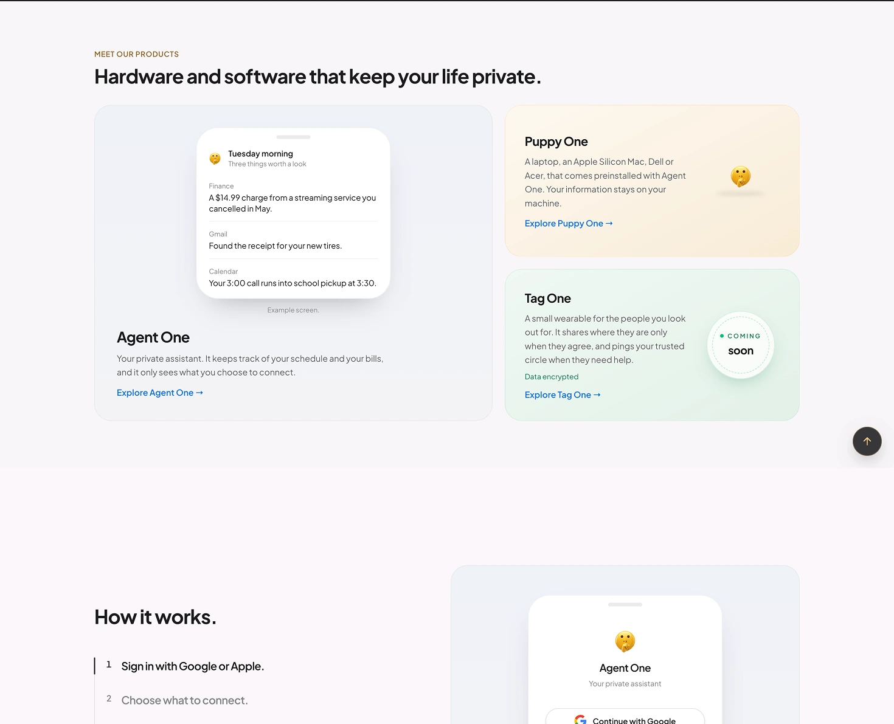
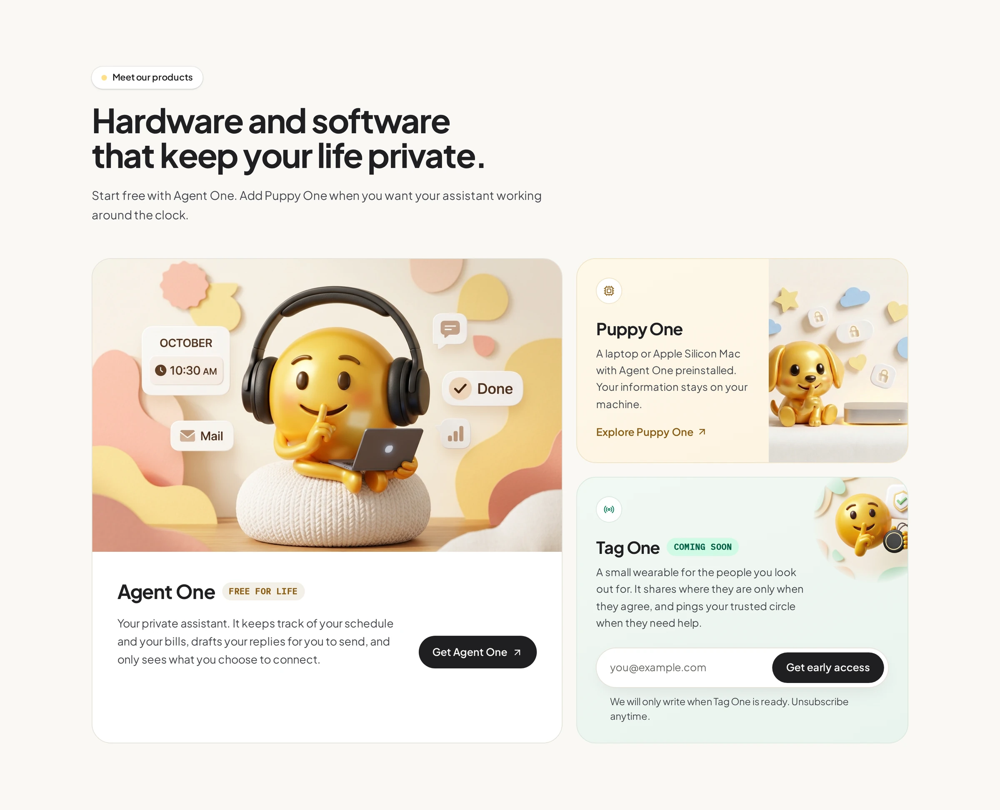
A phone mock, a tiny emoji and a stamp. Unequal care, unclear lead.
Agent One takes two thirds with a real scene. Every product has its own render and the action that fits its status.
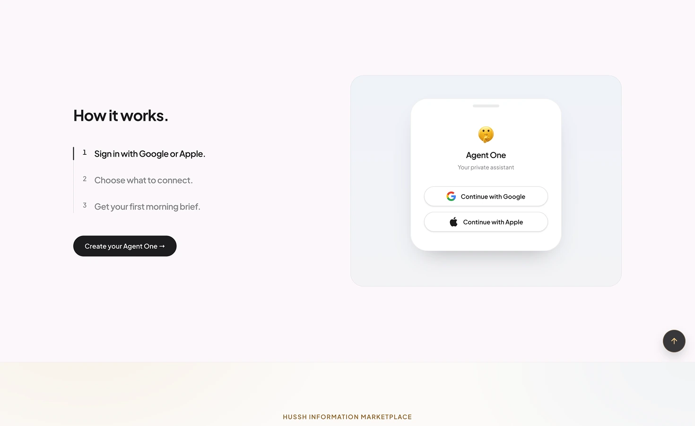
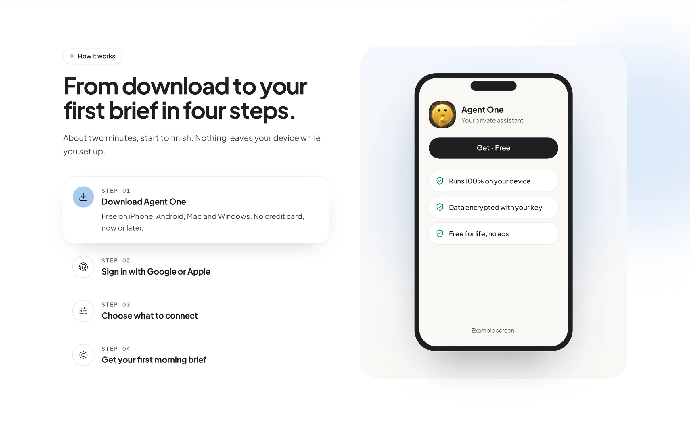
Three steps, two look disabled, the visual stops at sign-in.
Four steps ending on the morning brief, a two-minute time promise, and a phone that shows the privacy promises.
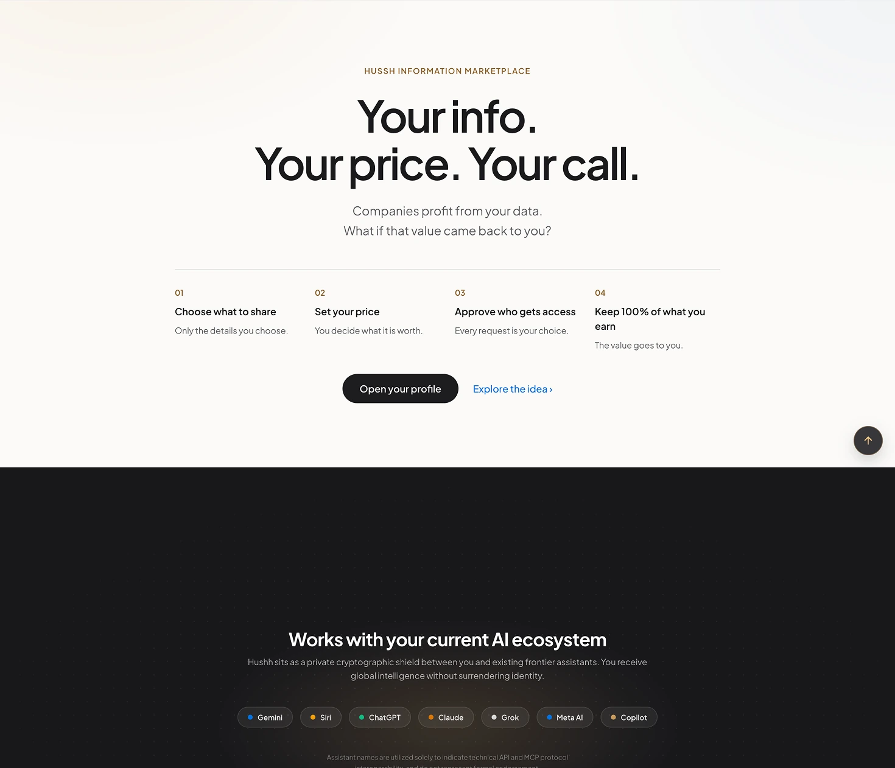
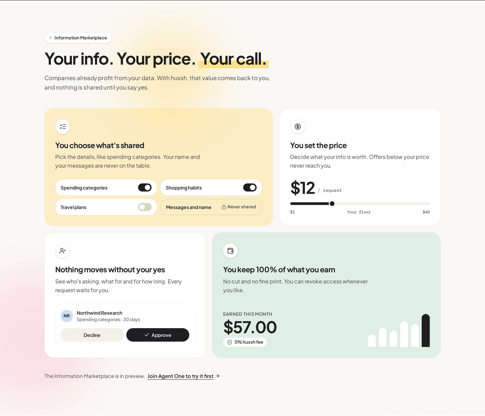
Four short claims, centered, ending in "Open your profile."
Four cards that show each step: what's shared, a $12 floor price, a request to approve, and earnings with a 0% fee.
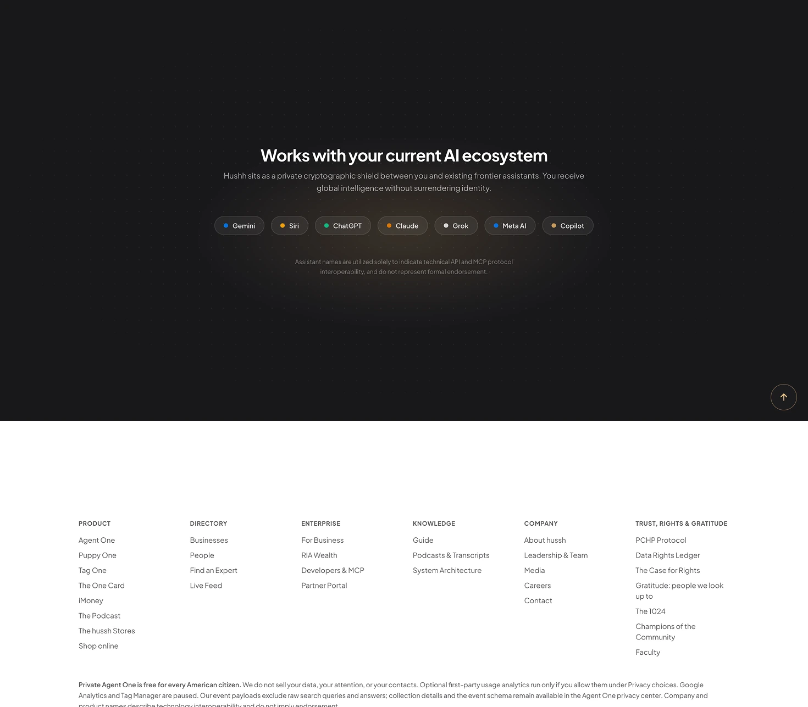
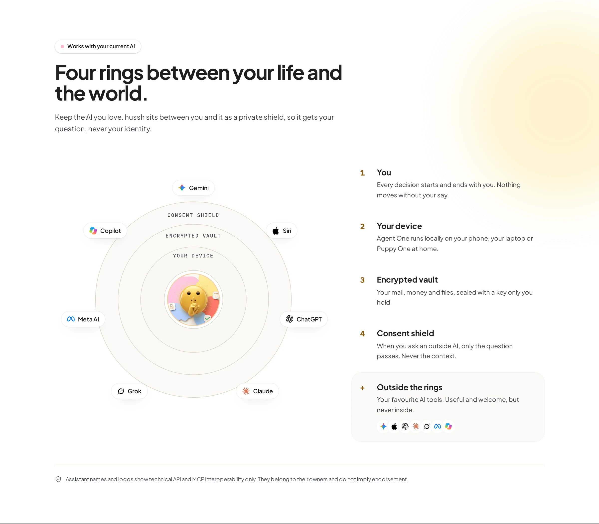
A mostly empty band with jargon and seven chips.
Four rings explain where the protection sits, with your AI tools outside and a plain-language list beside them.
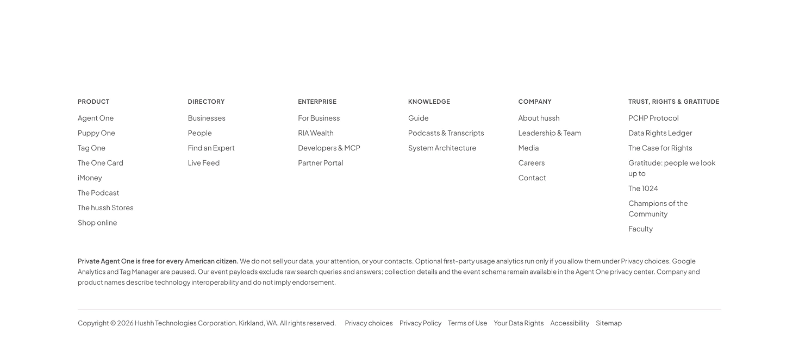
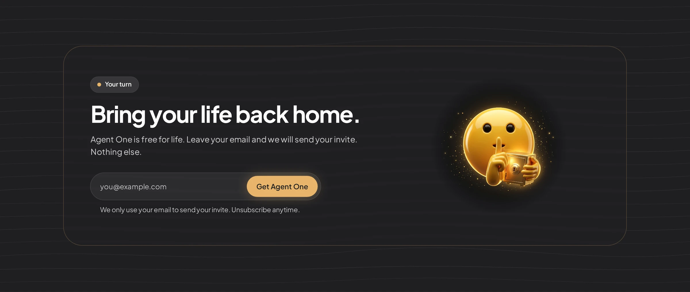
The page goes straight to the footer.
One clear closing ask with the email field, in a dark band that keeps hussh's original character.
The comparison section ("hussh vs. typical cloud AI") is new and has no current equivalent, so it isn't in the swipe. It's in the annotated walkthrough below.
The decisions behind the key sections
Hero
- A
Proof replaces posture
"On-device · Encrypted · Free for life" replaces "Sovereign intelligence." Fixes 2, 4.
- B
A headline a newcomer can repeat
The highlighter lands on "lives with you," the part that's different.
- C
One primary, one secondary
"Get Agent One, free" leads; "See how it works" says exactly where it goes. The shop moved to the Puppy One card. Fixes 3.
- D
The mascot shows the product working
"Stays on your device" and "Your morning brief is ready" turn a mascot into a product shot.
- E
Three color-coded doors
Butter, sky and blush tiles with each product's status. The colors return lower down. Fixes 1.
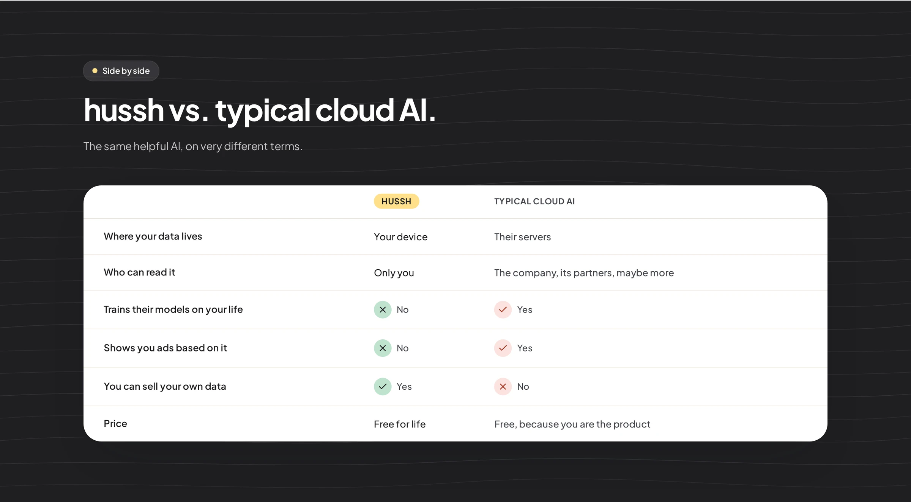
Comparison (new)
- F
Privacy as six checkable rows
Where data lives, who reads it, training, ads, selling, price. A visitor can check each claim against what they know.
- G
Never icon or color alone
Every ✓ and ✕ carries the word "Yes" or "No", so the meaning survives for color-blind and screen-reader users.
Marketplace
- H
What's never shared is shown too
"Messages and name: Never shared" answers the scary question before it's asked.
- I
A price you can picture
$12 per request on a $1–$40 scale makes the idea concrete. Fixes 14.
- J
Nothing moves without a yes
A named request with Decline and Approve shows control instead of claiming it.
- K
Honest about status
"The Information Marketplace is in preview," with one clear next step. Fixes 13.
What changed once it was real
Building the concept as a working page surfaced problems a static mockup hid.
Secondary CTA names its destination
Take the tour → See how it works
"Tour" could mean a video, a demo or a page. The new label says where it scrolls.
"How it works" became interactive
Four static icons → step list + phone
Each step updates the phone mock, with a pause control for the auto-advance.
Comparison moved to a dark band
Light card → dark section
Gives the page a mid-scroll pause and brings the brand's dark tone back early.
Marketplace grew to four cards
One request card → four step cards
Each of the four promises now has its own proof, including a "never shared" item.
The rings came back
Chip row → four-rings diagram
Real logos plus a trademark note; explains the shield instead of listing partners.
Microcopy got specific
No spam. → We only use your email to send your invite.
Says what will happen, which matters more on a privacy product.
One page, designed at 1440 and 390
Mobile wasn't shrunk from desktop. Each section was laid out for a thumb: content order follows importance, nothing scrolls sideways, and every button is at least 44px tall.
Scroll inside each phone; swipe the row for more.
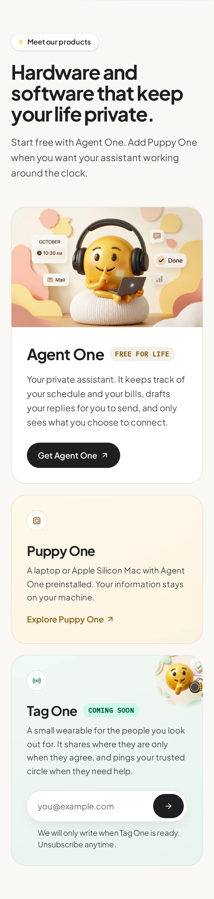
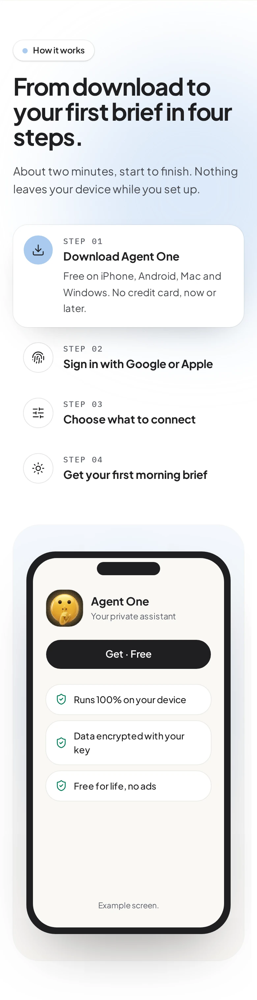
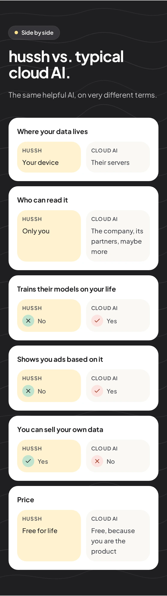
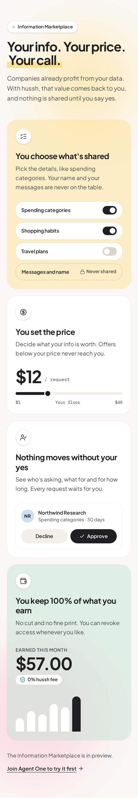
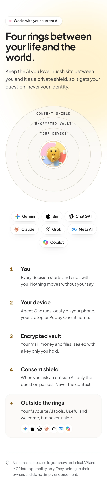
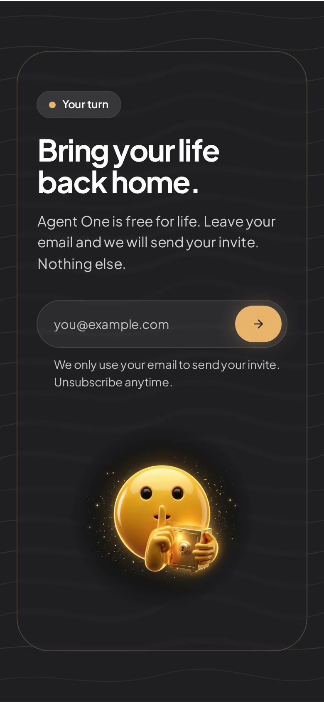
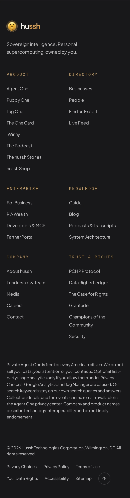
| Token | Desktop | Mobile |
|---|---|---|
| H1 | 72 / 1.04 | 44 / 1.04 |
| H2 | 48–60 / 1.04 | 36 / 1.05 |
| Body | 17 / 1.6 | 17 / 1.6 |
| Side gutter | 32 | 20 |
| Section padding | 96 | 60 |
| Container | 1240 | fluid |
| Button height | ≥ 44 | ≥ 44 |
Built to WCAG 2.2 AA, and checked on the live page
I didn't stop at a contrast checker on the mockup. I ran checks against the live prototype's real markup and computed styles. What still needs a human test is listed at the end.
| Criterion | Name | How the page meets it | Status |
|---|---|---|---|
| 1.1.1 | Non-text content | Content images have descriptive alt ("The hussh mascot hugging a golden vault"). Decorative images and AI logos, which sit next to their names, use empty alt. | Pass |
| 1.3.1 | Info & relationships | Header, two navs, main and footer landmarks. One H1, an H2 per section, H3 for cards. | Pass |
| 1.4.1 | Use of color | Comparison icons carry "Yes"/"No" text. Product colors always appear with the product name and an icon. | Pass |
| 1.4.3 | Contrast (minimum) | All 191 visible text elements measured against their computed backgrounds meet 4.5:1, or 3:1 for large text. | Pass |
| 1.4.10 | Reflow | Designed at 390px with no horizontal scrolling; the comparison table becomes stacked cards. | Pass |
| 2.2.2 | Pause, stop, hide | The auto-advancing "how it works" tour has a "Pause the tour" button. | Pass |
| 2.3.3 | Animation from interactions | prefers-reduced-motion rules are in place (AAA). | Pass |
| 2.4.1 | Bypass blocks | "Skip to main content" link at the top. | Pass |
| 2.4.2 | Page titled | "hussh — Personal AI that lives on your device". | Pass |
| 2.4.7 | Focus visible | A global focus ring: 2px ink outline, 3px offset and a 5px white halo, so it shows on both light and dark sections. | Pass |
| 2.5.8 | Target size | Buttons in the page body are at least 44px tall. Footer text links are 17px tall and rely on the spacing exception. | Partial |
| 3.1.1 | Language of page | lang="en". | Pass |
| 3.3.2 | Labels or instructions | Both email fields have labels, plus helper text saying what the email is used for. | Pass |
| 4.1.2 | Name, role, value | Nav menus expose aria-expanded; the steps showcase is a tablist with a labelled tabpanel; ring items use aria-pressed. | Pass |
| 4.1.3 | Status messages | Step changes are announced through polite live regions. | Pass |
| 2.1.1 | Keyboard | Controls are native buttons and links. A full keyboard walkthrough and a screen-reader pass are still to do. | To test |
Checked on the live prototype on Nov 5, 2026, with scripts that read the page's DOM and computed styles.
Every text-and-background pair, before it reaches a page
| Pair | Colors | Ratio | AA |
|---|---|---|---|
| Ink on ivory | #1F1F22 / #FAF8F5 | 15.5 : 1 | Pass |
| Body text on ivory | #45474D / #FAF8F5 | 8.8 : 1 | Pass |
| Muted text on ivory | #5B5F68 / #FAF8F5 | 6.0 : 1 | Pass |
| Deep-gold labels on ivory | #8A5C14 / #FAF8F5 | 5.5 : 1 | Pass |
| Ink on gold button | #1F1F22 / #E8B56B | 8.8 : 1 | Pass |
| Ink on highlighter | #1F1F22 / #FFE08A | 12.8 : 1 | Pass |
| White on gold | #FFFFFF / #E8B56B | 1.9 : 1 | Banned |
| Gold as text on ivory | #E8B56B / #FAF8F5 | 1.8 : 1 | Banned |
That's why the system has a separate deep-gold token for text: brand gold works as a fill, never as text.
Screen-reader pass
VoiceOver on iOS and NVDA on Windows, end to end.
Keyboard walkthrough
Tab order through nav menus, the steps tablist and both forms.
Footer targets
Raise footer link line height so each target reaches 24px.
Mock UI in the marketplace
The toggles and slider are illustrations, hidden from screen readers. Test that sighted users don't try to use them.
The existing identity, given rules
Values from the design kit's tokens. Plus Jakarta Sans for everything, IBM Plex Mono for small labels, a color per product, and two button styles.
Tab through to see the focus ring.
What I gave up, and how I'd test it
A light page for a brand known for dark
+
Approachability; the pastel product art finally sits on a ground that suits it.
Some of the current site's premium mystery.
Dark nav, comparison band and closing CTA keep the brand's tone. Worth an A/B test.
Agent One first, hardware second
+
One obvious, free starting point.
Less shelf space for Puppy One.
Hardware is in the hero doors and has its own render and link.
Cutting the FAQ
+
A shorter page; the comparison answers the main doubts.
Direct answers to "What if I lose my phone?"
If testing surfaces these questions, the FAQ from Direction C slots in above the close.
Naming "typical cloud AI"
+
Privacy made concrete.
Nuance; not every cloud AI trains on data or shows ads.
Legal review of each row before launch.
No user research informed this redesign, so its outcomes are hypotheses.
| Hypothesis | Method | Signal |
|---|---|---|
| The hero explains Agent One faster | Five-second test, current vs. new | More people describe it as a private assistant in their own words |
| Visitors know where to start | First-click test | First clicks land on Get Agent One |
| Proof sections build trust | Moderated sessions, think-aloud | Fewer "but where does my data go?" questions |
| The page converts better | A/B test after launch | Hero CTA clicks, scroll past comparison, closing-form submits |
The best direction wasn't one direction
Tour won alone, but each other direction solved one problem better. Diverging on structure first made the parts easy to combine.
AI sped up the making, not the deciding
Coded directions arrived fast, which left more time for judging. That's where the design actually happened.
Measuring changed the brief
Checking contrast instead of assuming it moved the work from "darken text" to "fix hierarchy."